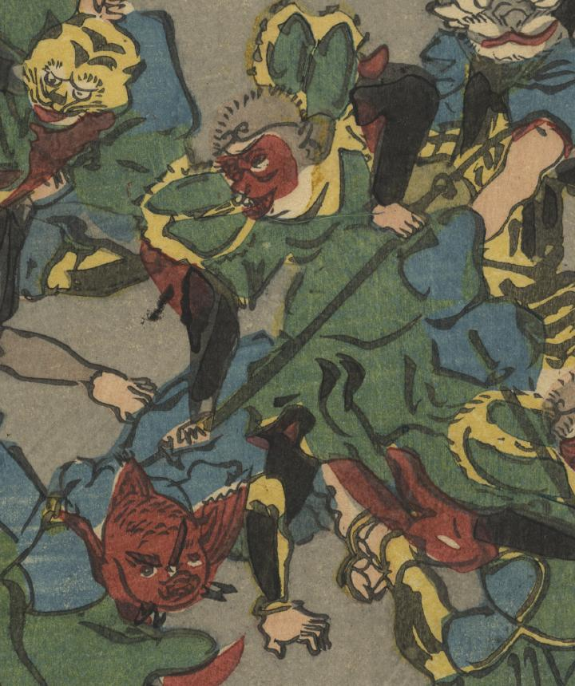

孫悟空に退治される、頭が赤い魚の化物。
著作者：狂斎／出典：親書誌：U426_nichibunken_0294：西遊記 西天竺經文取之圖；サイユウキ: ニシテンジク キョウモン トリ ノ ズ／日付：2014／資源識別子：U426_nichibunken_0294_0005_0000
Copyright (c)2010- International Research Center for Japanese Studies, Kyoto, Japan. All rights reserved.